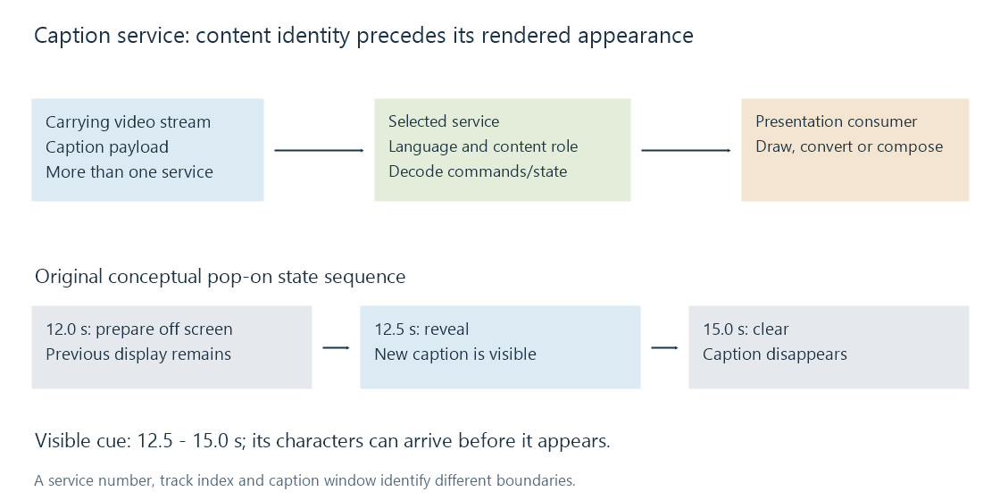

Closed-caption services
A closed-caption service is a selectable timed content stream whose commands, characters and presentation state must be recovered from its carrying media.
A closed-caption service supplies one selectable caption presentation. Its identity is separate from the video track carrying it and from the appearance controls used by the viewer.
A video source can contain multiple services, such as a primary caption language and another translation. Selecting the correct video track does not necessarily select the desired caption service inside it.
Service labels belong to a particular system
| System | Example selection identity |
|---|---|
| CTA-608 compatibility captions | CC1 through CC4 |
| CTA-708 digital captions | Numbered digital caption services |
| Teletext subtitles | A signaled page and language |
| ARIB captions | The applicable caption language/service information |
Those identities are not interchangeable track indices. A player's “English captions” menu entry can describe a recovered service rather than a separately multiplexed SRT track.
The caption contents can include dialogue and meaningful sound/speaker information. Language and accessibility role still need to match what the viewer wants to read.
Commands produce a presentation state
A caption stream can transmit characters, placement and controls that modify a display. One transmission is not necessarily one independent sentence with a complete start/end pair.
Consider an invented sequence:
| Programme time | Caption operation | Visible result |
|---|---|---|
| 12.0 s | Prepare a line in nondisplayed memory | Previous display remains |
| 12.5 s | Make the prepared presentation visible | New caption appears |
| 15.0 s | Clear the display | Caption disappears |
An extractor can derive a 12.5–15-second cue from that state. Treating the first character's arrival at 12.0 as the cue's appearance would place it early.
A recording seek similarly needs the required state or an acquisition point. Starting in the middle of commands that refer to earlier content can produce an incomplete display.
Selection, recovery and drawing are separate boundaries

For an Emby recording, investigate which service was present, which was selected, and how its data was delivered to the app. Correct video decoding alone does not establish that the caption commands were recovered.
A conversion can retain a supported service, extract it into timed text, or incorporate its rendered appearance into video. Those outputs preserve different selection and styling properties.
Caption extraction and in-band carriage explain those boundaries. The service itself identifies the content whose presentation is being reconstructed.